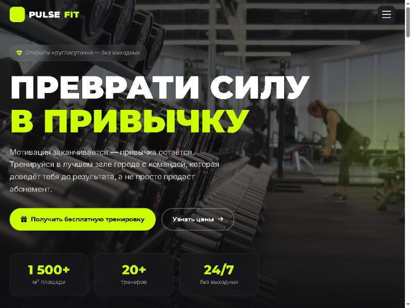

0.8сек
Скорость, которую чувствуют клиенты
Каждая лишняя секунда загрузки стоит вам заявок. Чистый код без тяжёлых конструкторов, оптимизированные изображения и шрифты — сайт открывается мгновенно даже на мобильном интернете.
Я веб-разработчик и дизайнер интерфейсов. Проектирую и запускаю лендинги и корпоративные сайты под ключ — с ясной структурой, выверенной эстетикой и безупречно чистым кодом.
ПринципСначала смысл, затем форма. Каждый экран, каждая строка кода и каждое слово служат одной цели — вашему результату.
Enter ↵ — запускПроектирую и разрабатываю современные сайты и лендинги под ключ — от стратегии и дизайна до запуска. Мгновенная загрузка, безупречная адаптивность и продуманный путь клиента к заявке — без шаблонов и компромиссов.
Сайт — это инструмент продаж. Поэтому я отвечаю не только за внешний вид, но и за то, как он приводит клиентов: структура, скорость, удобство и доверие с первого экрана.
Каждая лишняя секунда загрузки стоит вам заявок. Чистый код без тяжёлых конструкторов, оптимизированные изображения и шрифты — сайт открывается мгновенно даже на мобильном интернете.
Сначала разбираю нишу, конкурентов и аудиторию. Структура страницы строится вокруг вопросов и возражений вашего клиента.
Выверенная типографика, сетка и деликатная анимация. Визуал, который поднимает ценность вашего продукта в глазах клиента.
Больше 70% трафика — со смартфонов. Проверяю каждый блок на реальных размерах — от 320 px до широких мониторов.
Семантичная вёрстка, микроразметка, корректные мета-теги. Сайт хорошо индексируется и легко развивается.
Домен, хостинг, формы заявок, аналитика. После запуска остаюсь на связи: правки, новые разделы, развитие.
Фиксированная смета и календарный план. Вы видите результат на каждом этапе — без пропаданий и сюрпризов.
Выберите направление: сайт подстроит атмосферу, звук и примеры проектов под вашу сферу.
Лендинги IT-продуктов, SaaS-сервисы и личные бренды. Акцент — на скорость, ясную логику интерфейса и технологичную эстетику.
Живой проект, который можно открыть, полистать и проверить на телефоне. Код — открыт на GitHub.

● LiveАдаптивный лендинг, который превращает посетителя в запись на бесплатную пробную тренировку. Энергичный визуал, понятные тарифы и форма записи на каждом ключевом экране.
Расскажите о задаче — предложу решение, сроки и стоимость в течение дня.
Обсудить проектВы всегда знаете, на каком этапе проект и что будет дальше. А технологии выбираются под задачу — не наоборот.
Цели, аудитория, конкуренты. Формулируем оффер и ключевые сценарии.
Прототип страницы и продающие тексты — логика от первого экрана до заявки.
Визуальная концепция в Figma, адаптивы и согласование с вами.
Вёрстка, анимации, формы, тестирование на реальных устройствах.
Домен, хостинг, аналитика, SEO-настройка. Дальше — развитие сайта.
Интерфейсы, которым доверяют
Быстро, чисто, масштабируемо
Онлайн 24/7, под контролем
Решения на основе данных
Коротко о том, что обычно важно обсудить до старта. Не нашли ответа — спросите напрямую.
Да. Перед стартом заключаем договор, в котором фиксируются состав работ, сроки, стоимость и порядок приёмки. Вы точно знаете, что получите и когда.
В стоимость входят два круга правок на этапе дизайна и один после вёрстки. Мелкие текстовые правки в течение двух недель после запуска — бесплатно.
50% — предоплата перед стартом, 50% — после приёмки готового сайта. Для крупных проектов оплату можно разбить по этапам. Способы оплаты — криптовалюта, Telegram Stars или перевод на карту — ниже.
Да, полностью: код, макеты, доступы к хостингу, домену и аналитике. Сайт — ваша собственность, никакой зависимости от подрядчика.
Лендинг — от 7 рабочих дней, корпоративный сайт — от 2–3 недель. Точный срок фиксируем в договоре после брифа.
Выберите способ, который удобен вам. Порядок оплаты и реквизиты фиксируем в договоре.
Оплата в стейблкоинах или популярных монетах с MetaMask либо любого другого криптокошелька.
Быстрая оплата звёздами Telegram без банковских карт и лишних шагов — в пару касаний из чата.
Прямые переводы на карту из банков Евросоюза и международные переводы из других стран.
Опишите задачу в двух словах — в течение пары часов отвечу, задам несколько точных вопросов и пришлю план работ со сроками и стоимостью. Бесплатно и без обязательств.